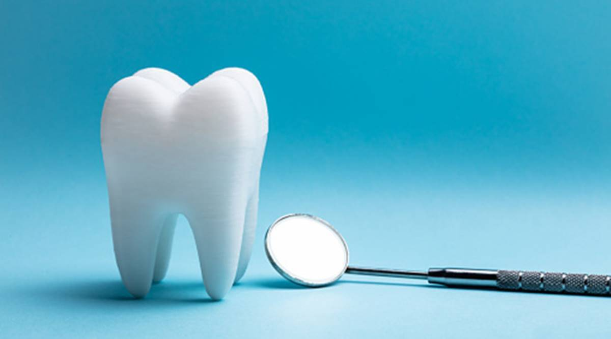

Jerome Mariano
My degree contains a concentration in Business and Society to give me the ability to explore Politics within the scope of economic and social practices in everyday life. Whether that means having a fundamental understanding of small, local business or the numerous facets of a multinational corporation, I have a deep understanding of the entire process. I pride myself on my ability to understand and empathize with all people and the situations that arise in their lives. I want to work with everyone that I meet to ensure that their lives receive more opportunities and comfort long after we part ways.
Secretary of "Advocate, Conversate, Educate," a club which focuses on addressing social issues that run rampant in society and encourages free-thinking to explore possible solutions. We meet every week to discuss a broad range of issues that include the death penalty, capitalism versus socialism, police brutality, and much more. A.C.E provides a safe space for people to share their thoughts and beliefs on the topic at hand and provides an opportunity for our members to hear diverse points of views. We are actively working with local community centers to promote events and lend support in any way we can. We have future plans of creating care packages stocked with food, socks, etc. for the homeless that reside in L.A. County and bringing in distinguished faculty of UC Riverside to share their experiences of discrimation, diversity, etc.
Worked on the campaign of Sally Lieber, a candidate for the primary election of District 13 of the California Senate in 2020. Performed canvassing for Sally's campaign and met with numerous residents of District 13 to advocate for Sally and promote her stances and views. I worked closely with the campaign manager, Jordan Eldridge, who taught me the subtle intricacies of campaigning and how to run a successful campaign. Ultimately, Sally finished 3rd, shy of 2nd place by a mere 600 votes, but valuable lessons were gained while working on the campaign trail and has prepared me for the challenges that may come if I decide to run for a government position one day.
Experience
Dental Assistant
• Assisted in dental procedures such as extractions, fillings, crown preps, etc.
• Cleaned operatories and set up for the next patient
• Organized and sterilized dental instruments
Secretary
• Club stands for Advocate, Conversate, Educate
• Tracked attendance during weekly meetings, took notes during Cabinet meetings, designed flyers for Instagram posts
Volunteer
• Performed petition work for Propsition 15
• Designed as a property tax that would have provided an annual $2 billion to schools and local governments
• Proposition 15 passed in the primaries, but was defeated in the general election
Education
University of California Riverside
Dental Specialties Institute
Mission San Jose High School
Portfolio
